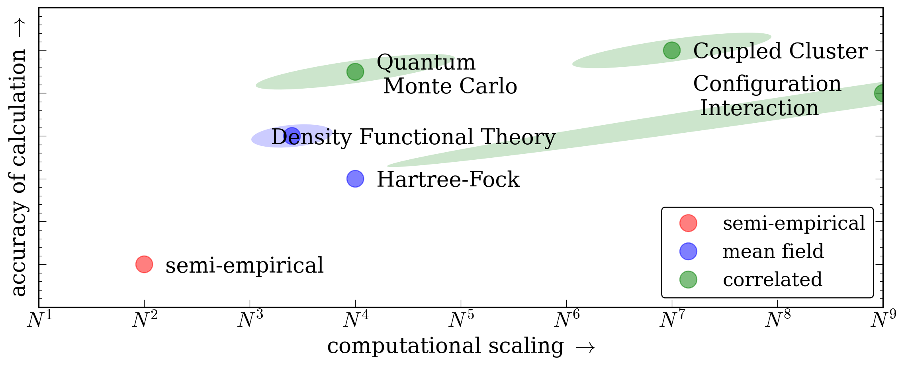
Quantum Monte Carlo
and
Molecular Fragmentation Methods
for the Treatment of Electron Correlation in Molecules and Solids
Amanda Dumi
Dissertation Defense
Dissertation Defense
Electronic Structure Problem:
describe the motions of electrons in atoms or molecule \[\hat{H}\left|\Psi\right>\ =\ E\left|\Psi\right>\]
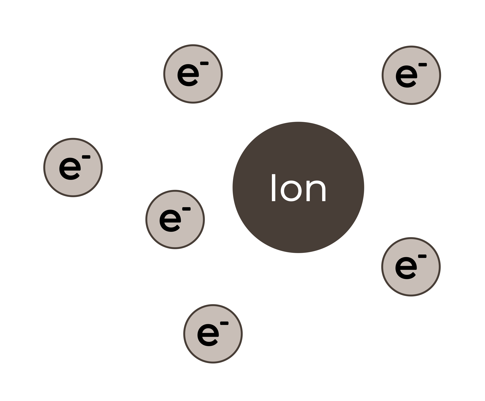
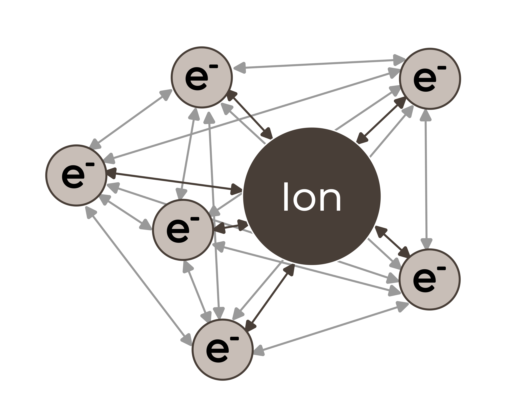
Electronic Structure Methods:
scaled by number of publications in 2021
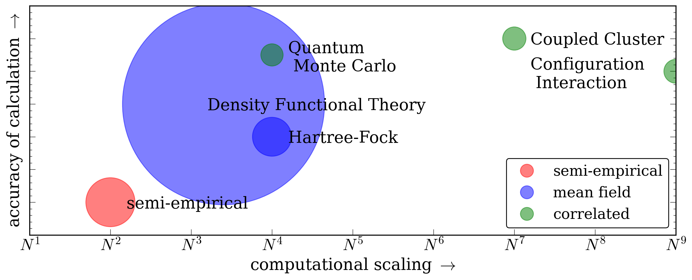
Motivating systems
Can we use or develop approximations which allow for a reasonable treatment of the systems challenging for DFT?
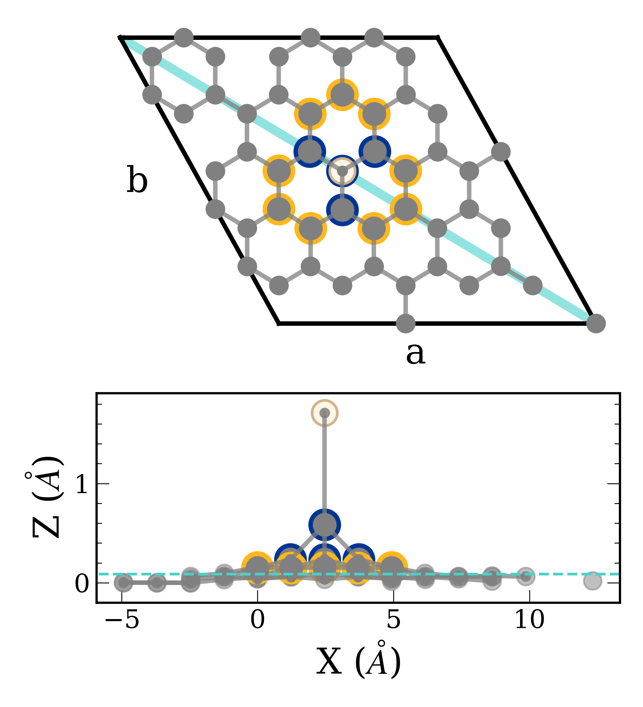 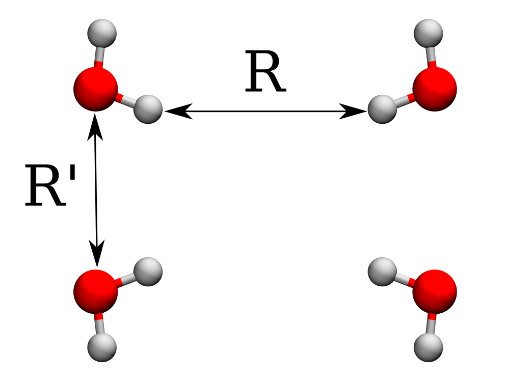 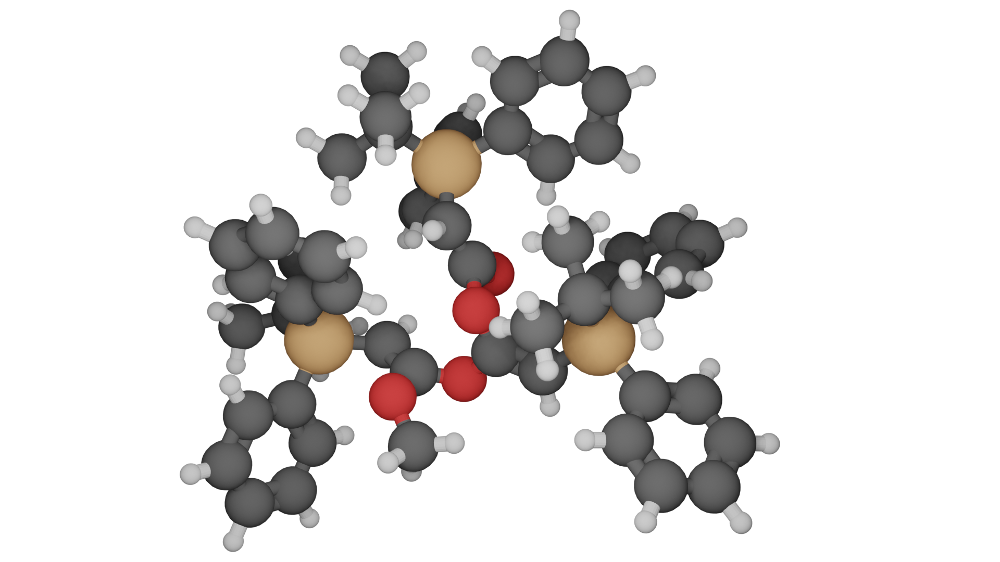
Electronic Structure Problem:
describe the motions of electrons in atoms or molecule \[\hat{H}\left|\Psi\right>\ =\ E\left|\Psi\right>\]
Approximations:
\[\begin{align} \hat{H} &= \sum_{i}\left[ -\frac{1}{2}\nabla_i^2 -\sum_{iA}\frac{Z_A}{\left|\vec{r}_i-\vec{R}_A|\right|}\right] + \sum_{i<j}\frac{1}{\left|\vec{r}_i - \vec{r}_j\right|} \\ \hat{H} &= \hat{h}(1) + \hat{v}(1,2) \end{align}\]
Non-relativistic, time-independent
Born-Oppenheimer: nuclei are stationary
Single particle orbitals: integrals \[\hat{H} = \hat{h}(1) + \hat{v}(1,2)\]
\[\begin{align} \langle i \rvert \hat{h}(1) \lvert j \rangle\ &=\ \int d\textbf{x}_1 \chi_i(\textbf{x}_1)\hat{h}(1) \chi_j (\textbf{x}_1)\\ \left[ij \rvert kl\right]\ &=\ \int d\textbf{x}_1d\textbf{x}_2 \chi_i^*(\textbf{x}_1)\chi_j(\textbf{x}_1) \hat{v} \chi_k(\textbf{x}_2)^* \chi_l(\textbf{x}_2) \end{align}\]
Single particle orbitals: Slater Determinant \[\Psi=\frac{1}{\sqrt{N !}}\left|\begin{array}{cccc} \chi_{1}\left(\mathbf{x}_{1}\right) & \chi_{2}\left(\mathbf{x}_{1}\right) & \cdots & \chi_{N}\left(\mathbf{x}_{1}\right) \\ \chi_{1}\left(\mathbf{x}_{2}\right) & \chi_{2}\left(\mathbf{x}_{2}\right) & \cdots & \chi_{N}\left(\mathbf{x}_{2}\right) \\ \vdots & \vdots & \ddots & \vdots \\ \chi_{1}\left(\mathbf{x}_{N}\right) & \chi_{2}\left(\mathbf{x}_{N}\right) & \cdots & \chi_{N}\left(\mathbf{x}_{N}\right) \end{array}\right| \]
Hartree-Fock: a mean field approach
Electrons feel the repulsive force of an average electron cloud.
\(\hookrightarrow\) Motion of individual electrons are not correlated
\(\hookrightarrow\) Finding the “best” orbitals for a single Slater determinant
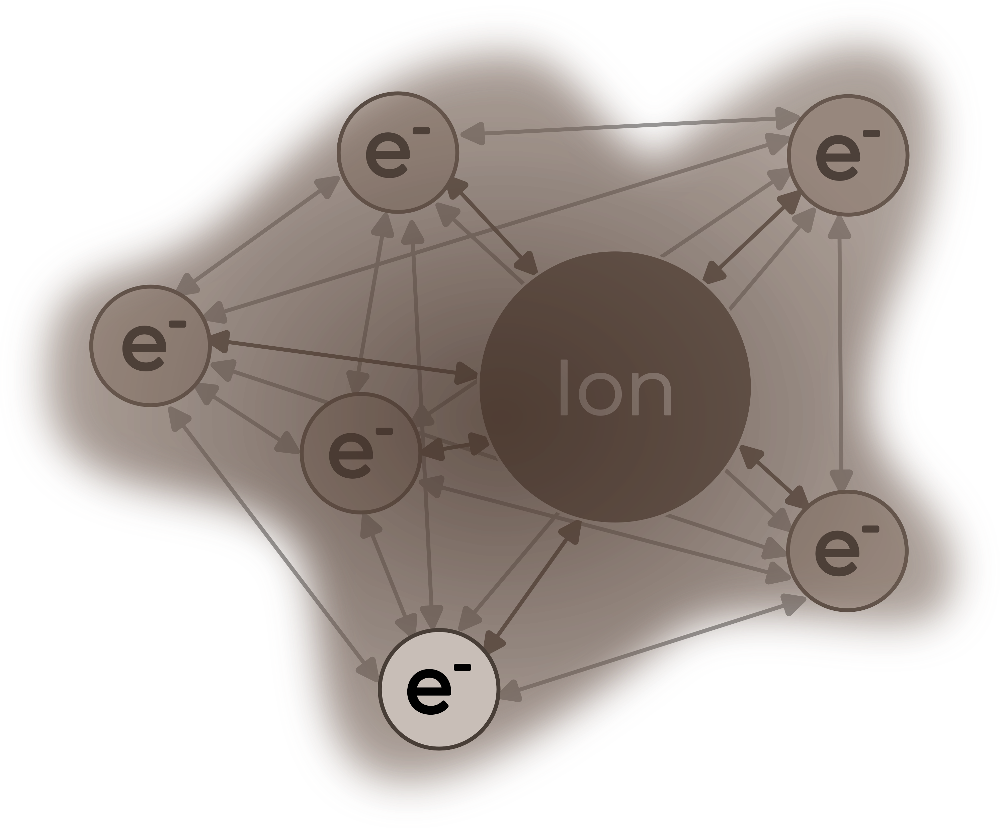
\[ E_{HF} = \sum_i^{elec}\langle i \rvert h(1) \lvert i \rangle + \sum_{i>j}^{elec}\left[ ii \rvert jj\right] - \left[ ij \rvert ji\right]\]
Coulomb \(\left[ii \rvert jj\right]= \int d\textbf{x}_1d\textbf{x}_2 \color{red}{\chi_i^*}(\color{blue}{\textbf{x}_1})\color{red}{\chi_i}(\color{blue}{\textbf{x}_1}) \hat{v} \color{green}{\chi_j^*}(\color{orange}{\textbf{x}_2})\color{green}{\chi_j}(\color{orange}{\textbf{x}_2})\)
Exchange \(\left[ij \rvert ji\right]= \int d\textbf{x}_1d\textbf{x}_2 \color{red}{\chi_i^*}(\color{blue}{\textbf{x}_1})\color{green}{\chi_j}(\color{blue}{\textbf{x}_1}) \hat{v} \color{green}{\chi_j^*}(\color{orange}{\textbf{x}_2})\color{red}{\chi_i}(\color{orange}{\textbf{x}_2})\)
Variational Principle
\[ E_v\ = \frac{\int dR\Psi^*(R) \hat{H} \Psi(R)}{\int dR\Psi^*(R)\ \Psi(R)}\ \geq\ E_0 \]
Correlation Energy
\[E_{corr}\ =\ E_{True}- E_{HF}\]
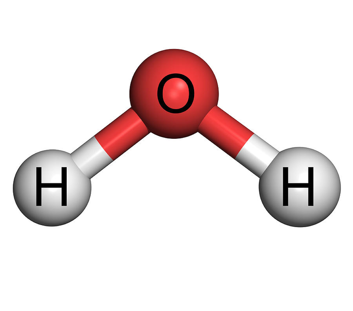
Vary 1 O-H bond distance in water
oh_dist = np.arange(0.6, 1.8, 0.2)
for r in oh_dist:
mol_h2o = gto.M(
atom = f"""
O 0 0 0; H 0 1 0; H 0 0 {r}
""",
basis = 'sto-3g',
verbose=0)
rhf_h2o = scf.RHF(mol_h2o)
e_hf = rhf_h2o.kernel()
e_fci = fci.FCI(rhf_h2o).kernel()[0]
all_e_hf = np.append(all_e_hf,e_hf)
all_e_fci = np.append(all_e_fci,e_fci)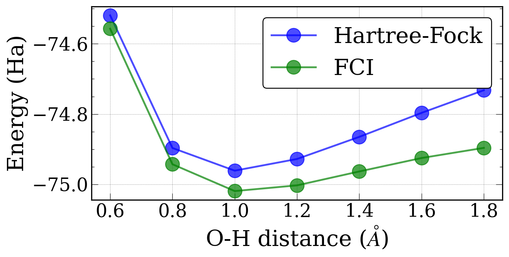
- Van der Waals interactions
- relative energetics
- Magnetism
- descriptions of d-shell electrons and higher angular momenta
Density Functional Theory
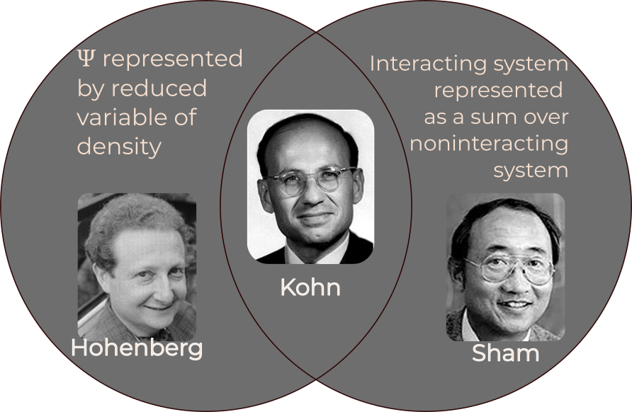
DFT: exchange-correlation functionals
\[ E_{KS}[n]\ =\ T_{ip}[n] + \int d\text{r} v_{ext}(r)n(r) + E_H[n] + \color{#ff0000}{E_{xc}[n]} \] \[\color{#ff0000}{E_{xc}[n]}\ =\ \underbrace{\Delta T[n]}_{\texttt{kinetic energy}\atop\texttt{correction}}\ +\ \overbrace{\Delta V_{ee}[n]}^{\texttt{e potential}\atop\texttt{ correction}}\]
\(E_{xc}\) form unknown. Approximate density functionals used:
LDA
\(\rightarrow\)
GGA
\(\rightarrow\)
mGGA
\(\rightarrow\)
hybrid
\(\rightarrow\)
generally more accurate
DFT challenges
- functionals are not systematically improvable
- functionals often created to target \(E\) and \(\rho\) only, meaning other observables may not be reliable
- wrong functional choice for system physics
- DFT fails in strongly correlated regimes
Reliable approximations for electronic structure
Quantum Monte Carlo:
applications and developments
Quantum Monte Carlo:
applications and developments
selected CI for
QMC trial wave functions
molecular fragments
determined with unsupervised machine learning
QMC application: Hydrogen on graphene 1
\(E_b=E_{dgr+H}-(E_{gr}+E_{H})\)
| Method | \(E_b\) (meV) |
|---|---|
| PW91 | -810 to -830, -870 |
| PBE | -790, -840, -980 |
functional dependent \(E_b\)
a need for benchmark values
\(\hookrightarrow\) can be provided by QMC
Classical Monte Carlo

Estimating the value of \(\pi\) with Monte Carlo sampling
Diffusion Monte Carlo the highlights
- relatively basis set independent
- embarrassingly parallel
- Fixed-node implementation scales \(\sim N^3\)
Considerations
Importance sampling: guiding wave function for efficient sampling
Fixed-node approximation:
antisymmetry of Fermionic system \(\rightarrow\) positive/negative portions \(\rightarrow\) unable to use as probability distribution
“solution”: fix nodes of \(\Psi_T\)
\(\hookrightarrow\) necessitates accurate nodal surface of \(\Psi_T\)
Diffusion Monte Carlo the highlights
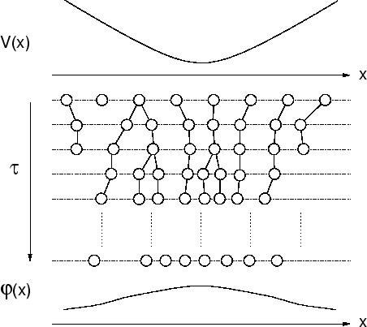
In real space, after some rearranging: \[ -\frac{\partial \psi(\mathbf{R}, \tau)}{\partial \tau} = \]
\[\left[\sum_{i=1}^{N}-\frac{1}{2} \nabla_{i}^{2} \psi(\mathbf{R}, \tau)\right] \text{ diffusion}\]
\[+\]
\[\left(V(\mathbf{R})-E_{T}\right) \psi(\mathbf{R}, \tau) \text{ rate}\]
QMC application: Hydrogen on graphene
| Method | Binding energy (meV) |
|---|---|
| PW91 | -810 to -830, -870 |
| PBE | -790, -840, -980 |
| PBE1 | -820 |
| PBE2 | -871 |
| PBE02 | -851 (-800) |
| HSE2 | -794 (-743) |
| DMC | -691 \(\pm\) 19 |
1 plane wave basis; 2 GTO basis
- PBE result obtained with a plane-wave basis set results in a \(E_b\) about 20% larger in magnitude than the DMC result.
- \(E_b\) variation \(\rightarrow\) order of magnitude change in the H evolution current at room temperature on graphene electrodes1
Density exploration
\[\Delta\rho_{system} =\rho_{system}^{DMC}- \rho_{system}^{DFT}\]
 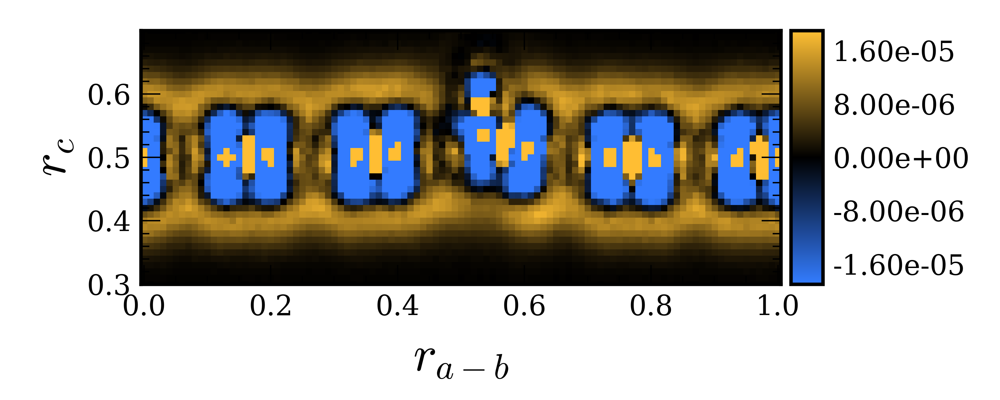
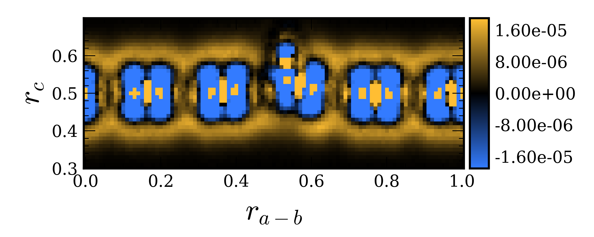
Are the differences in \(E_b\) due to density or functional reasons? Non-self consistent calculations
- functional driven error: 50 - 100 meV
- density driven error: \(\sim\) 20 meV
| \(\rho\) functional | \(E\) functional | \(E_b\) (meV) |
|---|---|---|
| \(\color{red}{PBE}\) | \(\color{red}{PBE}\) | \(\color{red}{-962}\) |
| \(HSE\) | \(PBE\) | \(-947\) |
| \(\color{red}{PBE}\) | \(\color{red}{HSE}\) | \(\color{red}{-879}\) |
| \(HSE\) | \(HSE\) | \(-905\) |
| \(\rho\) functional | \(E\) functional | \(E_b\) (meV) |
|---|---|---|
| \(\color{red}{PBE}\) | \(\color{red}{PBE}\) | \(\color{red}{-962}\) |
| \(\color{red}{HSE}\) | \(\color{red}{PBE}\) | \(\color{red}{-947}\) |
| \(PBE\) | \(HSE\) | \(-879\) |
| \(HSE\) | \(HSE\) | \(-905\) |
Conclusions and future directions:
Conclusions:
- According to QMC benchmark, DFT seems to over estimate the binding energy which could have experimental impacts.
- Disagreement between functionals seems to driven by the functional used, and not the density.
Future direction:
- Are there cases where a more accurate density becomes important (DC-DFT) and if so can QMC densities become a tool? (Current work with Devin Mulvey and Shiv Upadhyay)
- Do we see any change if a multideterminant trial is used? (a current project)
Reliable approximations for electronic structure
Quantum Monte Carlo:
applications and developments
selected CI for
QMC trial wave functions
selected CI for
QMC trial wave functions
molecular fragments
determined with unsupervised machine learning
QMC application: non-valence correlation bound anion1
- Relevant to image potential states in graphene sheets and C\(_{60}\) clusters
- Rely on an accurate description of \(E_{corr}\) to bind
model system: (H\(_2\)O)\(_4\)
Radial integration of Hartree-Fock orbital density, \(R=4\) Angstroms
Multideterminant impact on QMC trial wave functions
\(\Psi_n = \sum c_I^{(n)}\left|D_I\right>\)
Full Hilbert space solution typically unattainable
hand-picked: restricted single-double CI
Selected Configuration Interaction: CIPSI
\(e_\alpha = \frac{ \langle \Psi^{(n)}| {\hat H} | \alpha \rangle^2 }{E^{(n)} - \langle \alpha | {\hat H} | \alpha \rangle }.\)
\(\{ \left|\alpha\right> \}\)
single & double excitations
\(\{ \left|\alpha\right> \}_*^{(n)}\)
\(\Psi_n\)
\(\Psi_{n+1}\)
(H\(_2\)O)\(_4\) Results
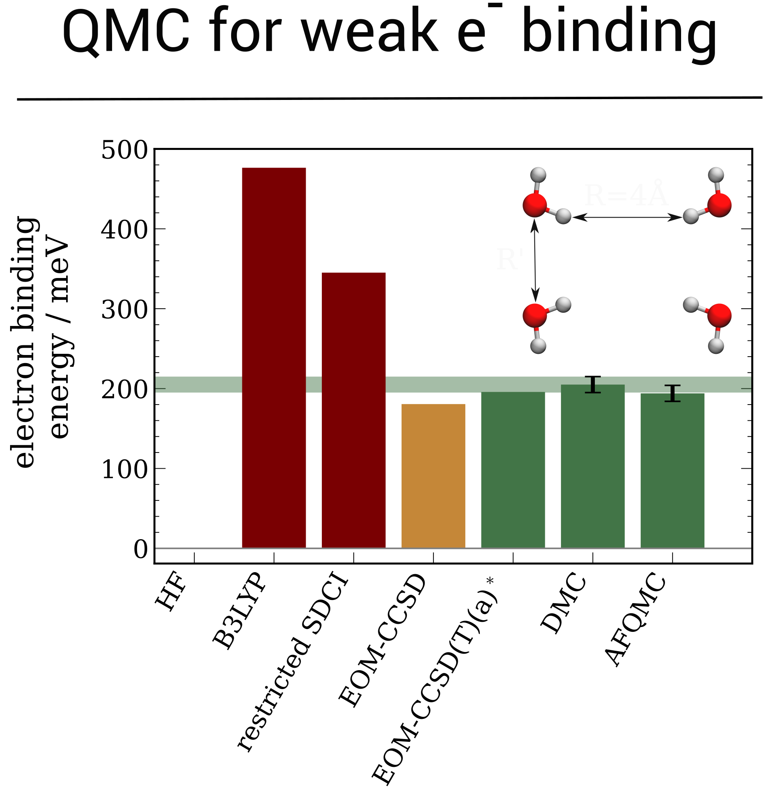
| wave function | EBE (meV) |
|---|---|
| HF | -0.4 |
| EOM-CCSD | 180.6 |
| EOM-CCSD(T)(a)∗ | 195.8 |
| DMC | |
| SD/HF | 183 \(\pm\) 10 |
| SD/B3LYP | 212 \(\pm\) 11 |
| SD/HF(N)//SD/NO SDCI(A) | 205 \(\pm\) 10 |
| MD/CIPSI NO | 190 \(\pm\) 9 |
| AFQMC | |
| SD/HF(N)//SD/NO SDCI(A) | 194 \(\pm\) 10 |
- DMC, AFQMC with multideterminant trial agrees with EOM-CCSD(T)(a)* result
(H\(_2\)O)\(_4\) Radial Integration
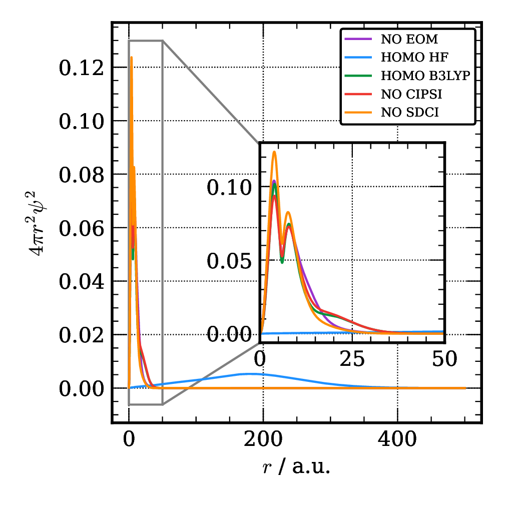
\(R\) = 4 Angstroms
- HF does not bind
- B3LYP shoulder, likely due to self interaction error
- rSDCI shape agrees with EOM
- CIPSI used B3LYP orbitals, shoulder still present, but lessened.
(H\(_2\)O)\(_4\): Conclusions and future directions:
- a model case for NVCBs was treated successfully in QMC
- Although choice of trial wave function as sensitive: hand picked and CIPSI wave functions performed well as trials.
Reliable approximations for electronic structure
Quantum Monte Carlo:
applications and developments
selected CI for
QMC trial wave functions
molecular fragments
determined with unsupervised machine learning
molecular fragments
determined with unsupervised machine learning
Fragmenting with unsupervised machine learning
Problem
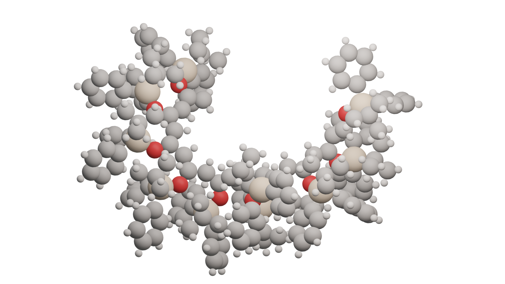){width=70% }
Other fragment determination methods
many body expansions: \(E = \sum_I E_I + \sum_I\sum_{J>I} \Delta E_{IJ} + \sum_I\sum_{J>I}\sum_{K>J} \Delta E_{IJK} + \dots\)
multilayer approaches (ONIOM, QM/MM)
Quantum Computing Applications
Localized active space methods
- Energy convergence
- Systematic Molecular Fragmentation with Annihilation
- Density convergence
- user defined
Fragmenting with unsupervised machine learning
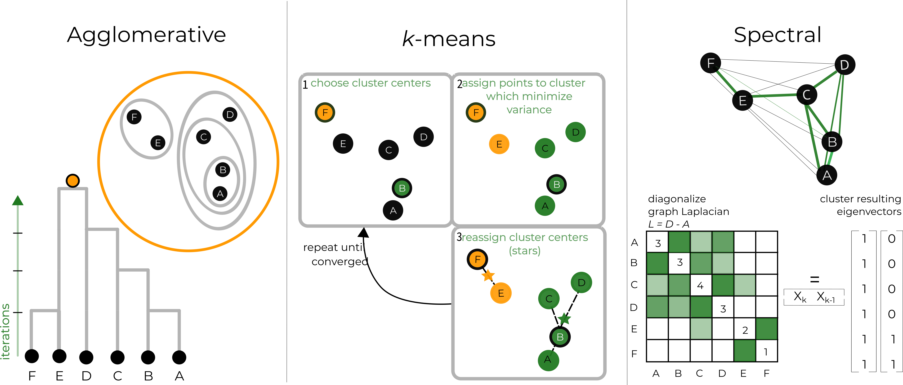
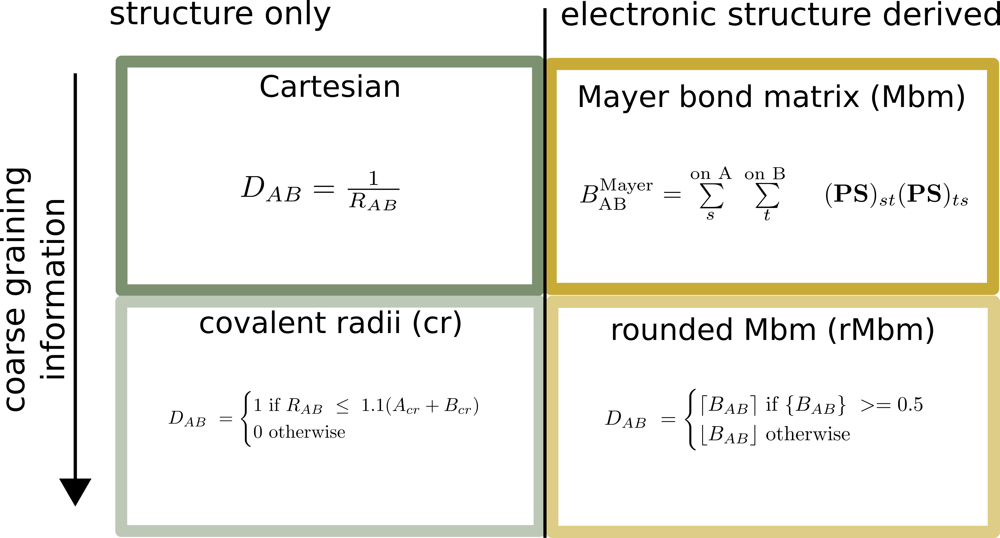
Partitioning straightforward cases
adjusted Rand index =1 -> expected fragmentation
- Wales water cluster database 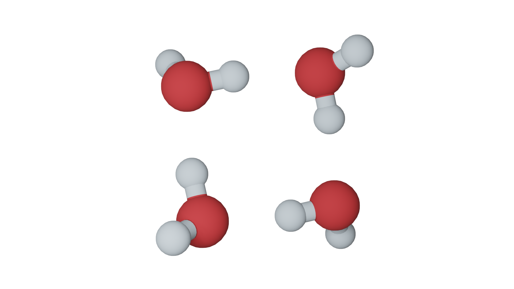
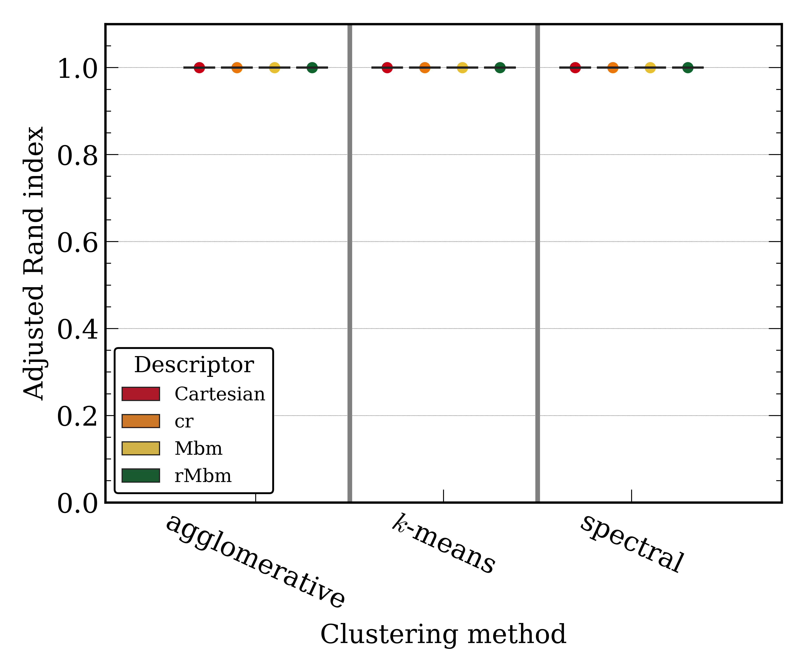
- methylthiophene tetramers 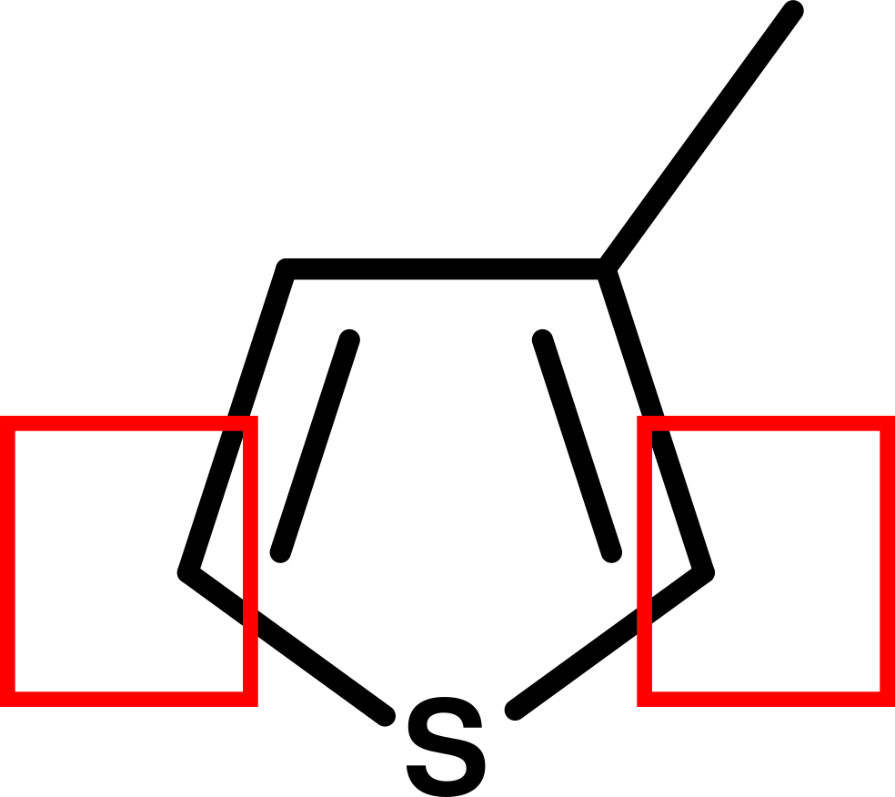
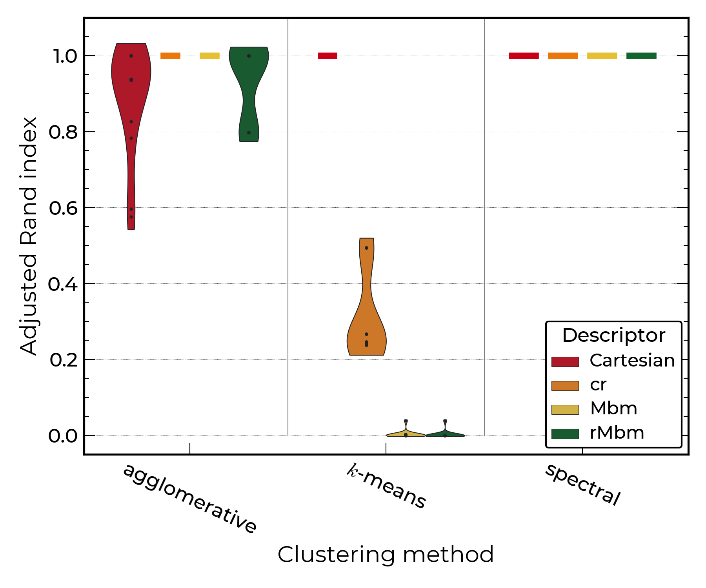
Summary:
Additional insights from water clusters
 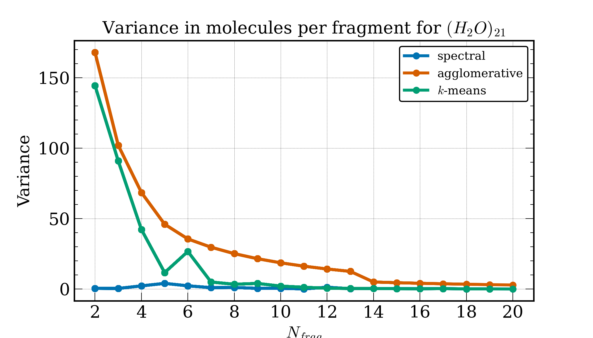
A more ambiguous case: silyl ketene
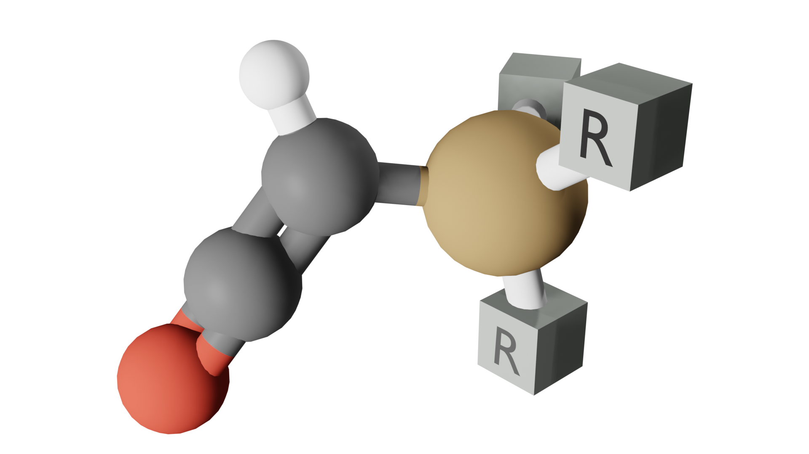
Questions:
- Investigate error vs speed up
- What factors impact descriptor? (level of theory, basis set)
Computational details:
- vacuum embedding: \(E_{\text{tot}}= \sum\limits_{i=1}^{N_{frag}} E_i\)
- \(E_{\text{frag}}\) = Fragments with hydrogen caps - H only values
- three fragments requested
A more ambiguous case: silyl ketene
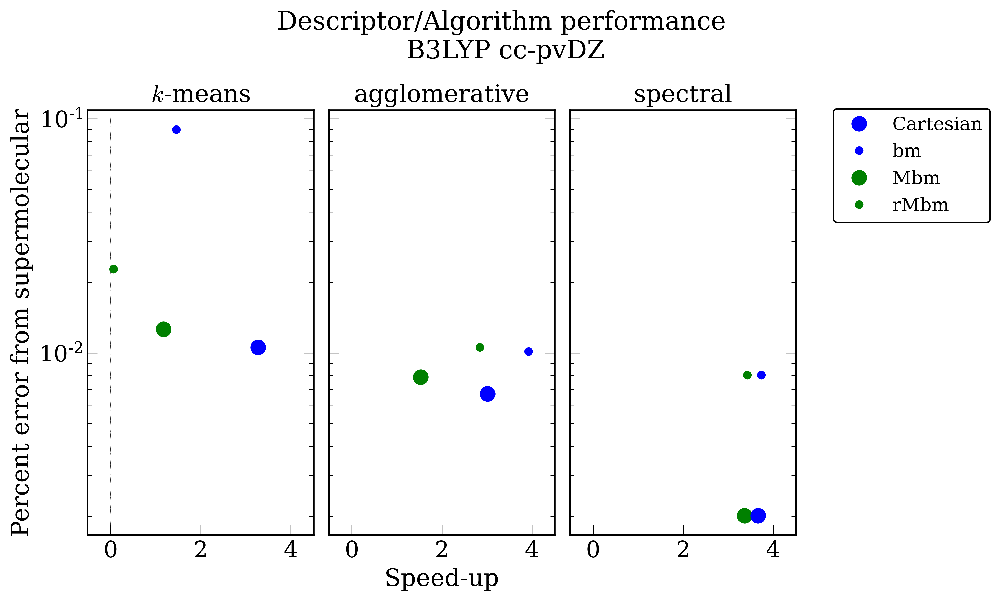
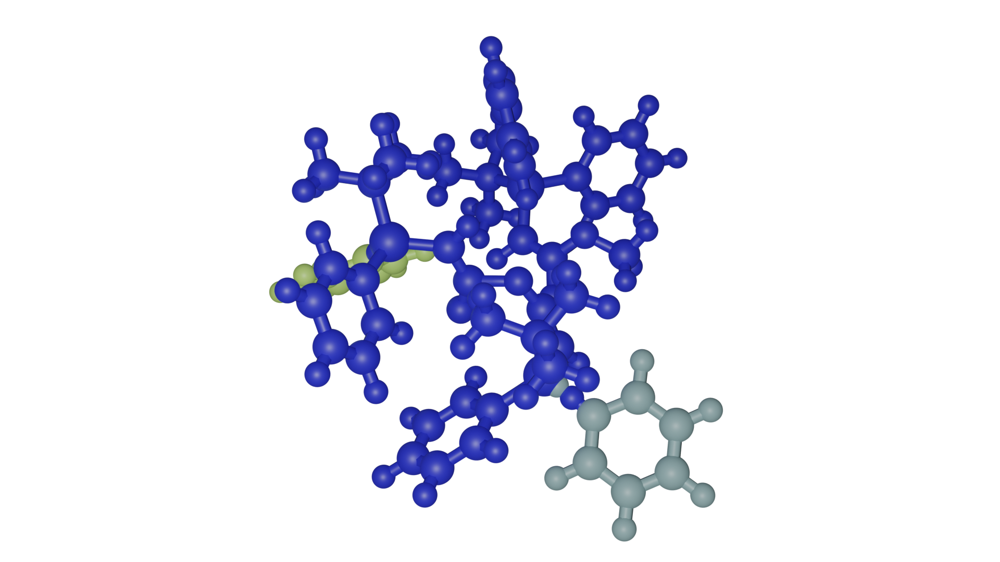 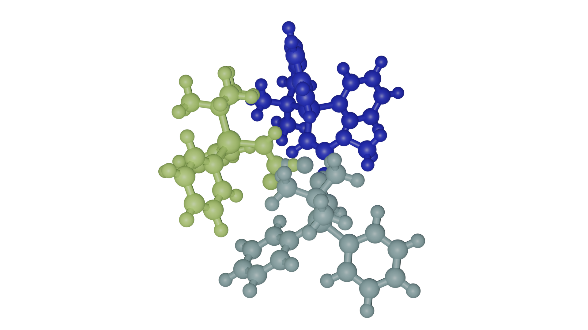
- spectral: lowest error/highest speed-up
- structure only descriptors are still performing well!!
- rounding has no benefit in small dataset
- spectral not impacted by basis set/level of theory for descriptor
:::
Future Directions
Conclusions: - UML Molecular Fragmentation: An approach to automatically partition molecular systems
\(\hookrightarrow\) spectral clustering is the most robust approach
\(\hookrightarrow\) with systems to this point, can work with structure only descriptors offering a potential low cost way to even fragment determination
Future Directions:
- short term: large polymer study.
- 2-body density matrix as descriptor
- ongoing work: looking into the use of fragmentation methods for regional embedding (Shiv Upadhyay and Dr. Lambrecht)
Acknowledgements
- Dr. Kenneth D. Jordan
- Dr. Daniel S. Lambrecht
- Co-authors: Shiv Upadhyay, Dr. James Shee, Dr. Hyeondeok Shin, Dr. Leonardo Bernasconi, Dr. Anouar Benali
- Dr. Luke Shulenburger, Dr. Raymond Clay
Computational Resources
- Center for Research computing, University of Pittsburgh
- Argonne Leadership Computing Facility
- Sandia National Laboratories
Funding:
- ACS: DNI-63213
- NSF: 1807638

Acknowledgements


Acknowledgments
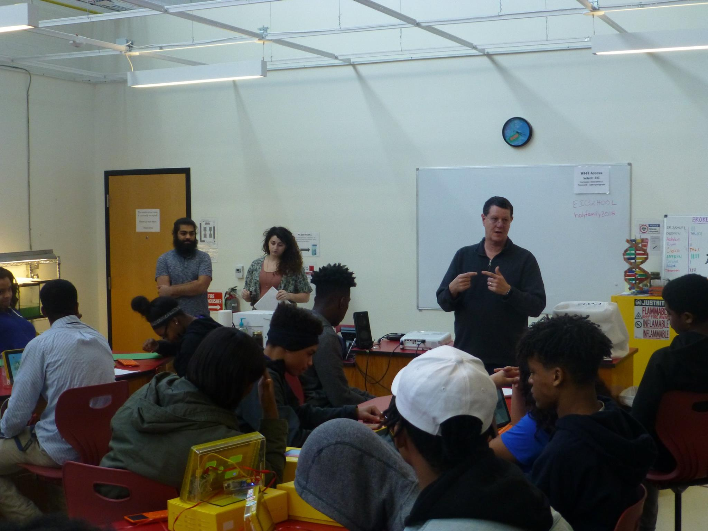 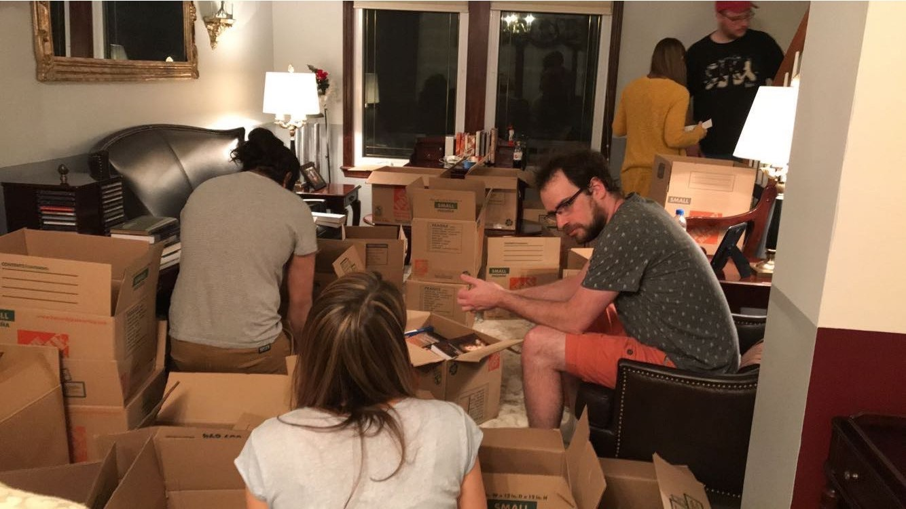
Conclusions
Demonstration of possible approximate methods to treat cases where elctron correlation may not be well described by mean-field methods
QMC: application to (H\(_2\)O)\(_4\) and H on graphene
\(\hookrightarrow\) systems where DFT varies, QMC can act as reference
\(\hookrightarrow\) sampling the hilbert space can provide trial wave functions
\(\hookrightarrow\) motivation for follow up studiesUML Molecular Fragmentation: An approach to automatically partition molecular systems
\(\hookrightarrow\) spectral clustering is a robust approach which can work with structure only descriptors.
Thank you for your attention!
Appendix slides:
System information
Supporting information
- basis set convergence
Methods information
- DMC and periodic systems
- Slater Jastrow wave functions
- Clustering cost functions
- NVCB other methods:
- SMFA details
Non-valence correlation bound anions
Hgraphene
possible experimental techniques to determine the number of layers and presence of defects:
high resolution transmission electron microscopy: beam of electrons to form an image x-ray diffraction: x-rays filtered, interact with sample, constructive interferene at certain lattice spacings Raman spectroscopy: changing the polarizability of a molecule, which scatters light (IR is dipole and light is absorbed.)
silyl-ketenes
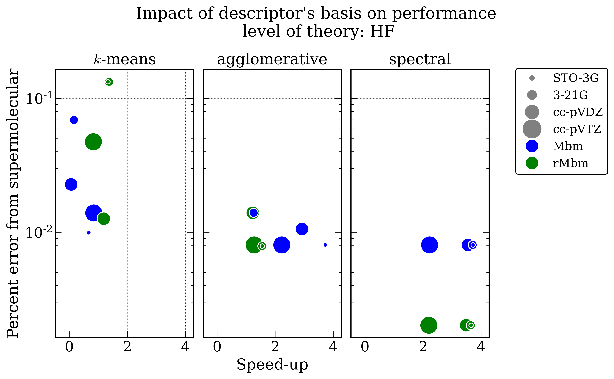
- spectral: no impact with basis set used
- others unpredictable
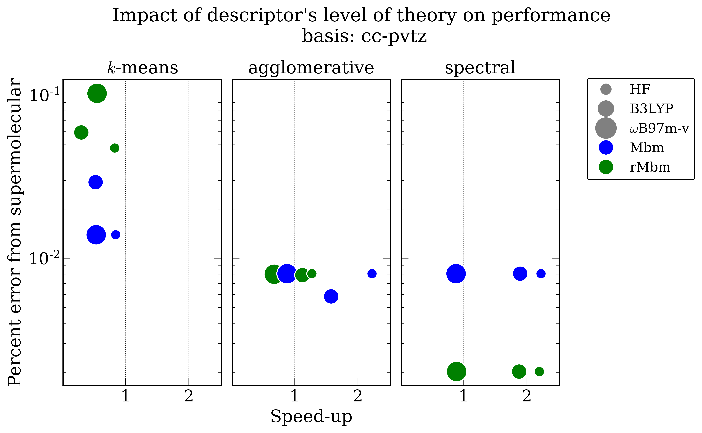
- spectral: no impact with level of theory used
- others unpredictable
Experimental techniques
- column chromatography
- requency in FTIR to study reaction progress.
DMC and periodic systems
Local Energy Expression
PBC Specific consideration
- reduce finite size errors: Twist angles or extrapolation
- NLPP always important, but exceptionally impactful here.
\(E_L(R) = \frace{\hat{H}\Psi_T(R)}{\Psi_T(R)}\)
Slater Jastrow
\(\Psi_{SJ}(R)\ =\ det(\varphi_k(x_i))e^{=\sum_{i<j}u(x_i,x_j)}\) where \(\varphi_k\) are the orbitals, and the exponential term is the Jastrow correlation factor.
\(U(R)\ =\ \sum_i^I u(\textbf{r}_{iI})+\sum_{i<j}^N u(\textbf{r}_{ij}) + \sum_{i<j}^N\sum_{I}^M u(\textbf{r}_{iI},\textbf{r}_{jI},\textbf{r}_{ij})\) Parameters chosen through a VMC optimization.
NVCB other potential methods
EOM-CCSD(T)(a) and EOM-CCSD(T)(a)\(^*\) correct both the ground and excited states based on a shared effective Hamiltonian, and the latter of which includes only non-iterative corrections to both the CCSD and EOM-CCSD energies
OO-MP2: Used to correct artificial symmetry breaking common to HF orbitals.
Algebraic Diagrammatic Construction (ADC) Scheme.
Bruekner: orbitals where singles are elimanted.
References
Amanda Dumi, Shiv Upadhyay, Leonardo Bernasconi, Hyeondeok Shin, Anouar Benali, & Kenneth D. Jordan, “The Binding of Atomic Hydrogen on Graphene from Density Functional Theory and Diffusion Monte Carlo Calculations,” The Journal of Chemical Physics, 156.14 (2022), 144702DOI:10.1063/5.0085982
Min A. Kim, Dan C. Sorescu, Shigeru Amemiya, Kenneth D. Jordan, & Haitao Liu, “Real-Time Modulation of Hydrogen Evolution Activity of Graphene Electrodes Using Mechanical Strain,” ACS Applied Materials & Interfaces, 14.8 (2022), 10691–700DOI:10.1021/acsami.1c21821
Shiv Upadhyay, Amanda Dumi, James Shee, & Kenneth D. Jordan, “The Role of High-Order Electron Correlation Effects in a Model System for Non-Valence Correlation-Bound Anions,” The Journal of Chemical Physics, 153.22 (2020), 224118DOI:10.1063/5.0030942